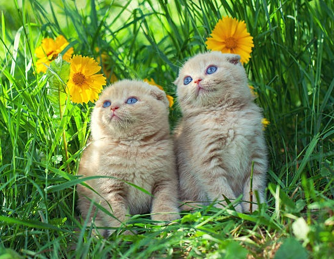

Mèo Scottish Fold là giống mèo tai cụp có nguồn gốc từ Scotland. Phần sụn tai bẻ về đằng trước của chúng là kết quả của đột biến sinh học tự nhiên xảy ra trên dòng mèo nhà bình thường.
Sự xuất hiện đầu tiên của loài mèo này bắt nguồn từ chú mèo trắng tên Susie tại một nông trại ở Perthshire năm 1961. Kể từ khi xuất hiện, chúng luôn được xếp hạng là một trong những loài mèo đáng yêu nhất. Hiện Scottish rất được ưa chuộng và được nuôi phổ biến trên toàn thế giới.
Điểm đặc trưng nhất của loài mèo này chính là đôi tai cụp. Tuy nhiên, không phải tất cả giống mèo này đều như vậy, vẫn có trường hợp tai thẳng. Nguyên nhân là do ảnh hưởng của phần sụn toàn thân mà đôi tai của chúng bị bẻ ra phía trước hay phía trên đầu.
Mèo Scottish có một bộ lông dày và ngắn, ôm sát cơ thể. Bạn sẽ nhận được sự nhẹ nhàng, mềm như nhung khi sờ vào bộ lông của chúng.
Scottish có rất nhiều màu lông khác nhau cho bạn thỏa sức lựa chọn như: Xám, xanh xám, lilac, bạc, vàng,... . Mỗi sắc lông mang lại một vẻ đẹp riêng cho giống mèo này.
Mèo Scottish sở hữu đôi tai với 4 cấp độ cụp vô cùng độc đáo (Tai càng cụp sát giá càng cao). Gương mặt bầu bĩnh với đôi mắt to tròn ngọt ngào. Những đặc điểm đó khiến Scottish làm "say lòng" rất nhiều người yêu mèo trên toàn thế giới.
Mèo Scottish rất hiền lành và thân thiện với con người. Chúng thích nằm cuộn tròn trong lòng chủ nhân để được âu yếm, vuốt ve. Đặc biệt chúng cực kỳ hòa đồng với các vật nuôi khác và thích chơi đùa với trẻ nhỏ.
So với những giống mèo nhà cùng loại, Scottish khá điềm tĩnh và "chững chạc" hơn so với những "bạn bè cùng trang lứa". Chúng rất ngọt ngào và hiểu chuyện, có thể ở bên bạn cả ngày mà không chán.
- Ngoại hình tổng thể: Chọn những bé có kích thước thân hình rộng, tròn trịa.
- Đầu to tròn, mũi ngắn, khóe miệng nhỏ hơi cong lên như mỉm cười. Tai cụp, tổng thể khuôn mặt hài hòa, nhìn cảm giác nhẹ nhàng, thân thiện
- 4 chân ngắn, chắc khỏe; Đuôi dài vừa phải, lông dày và tròn.
(*)Lưu ý: Chỉ mua những bé có tuổi đời trên 2 tháng tuổi, được tiêm chủng ít nhất 2 mũi vaccine. Khi đi mua nên theo dõi trong khoảng 20 phút, quan sát phản ứng, hành vi và thể trạng xem có nhanh nhẹn, hoạt bát không thì mới nên chọn mua. Yêu cầu bên bán cung cấp đầy đủ hợp đồng mua bán, chính sách bảo hành, giấy tờ chứng minh nguồn gốc xuất xứ,... .